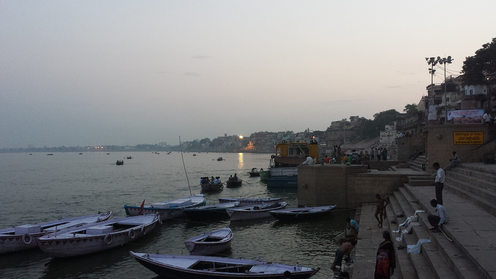
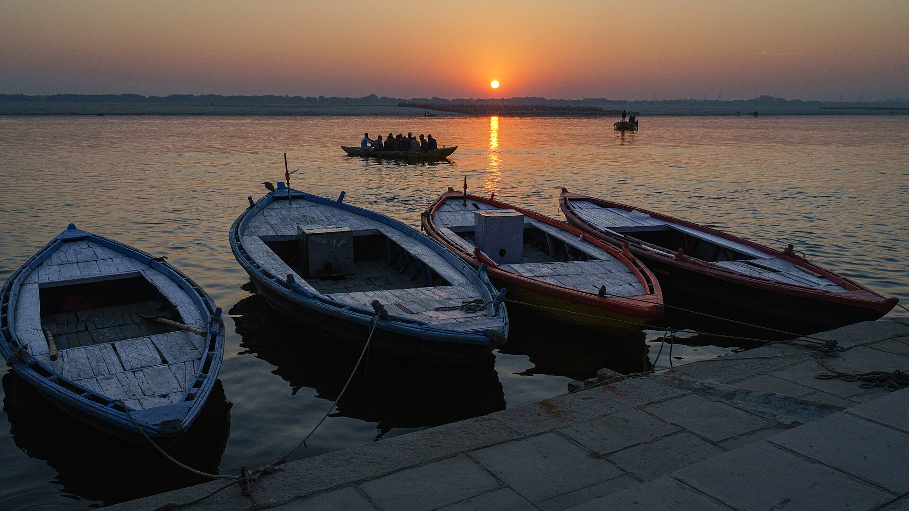
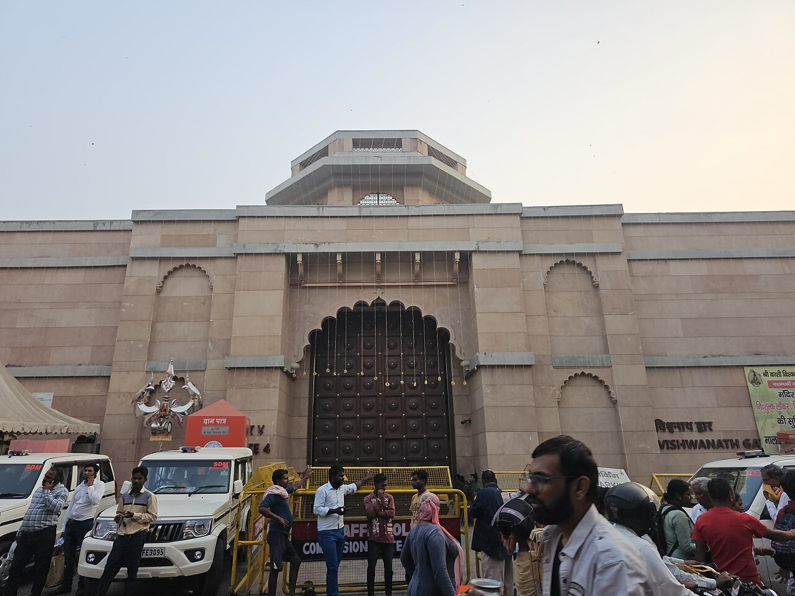
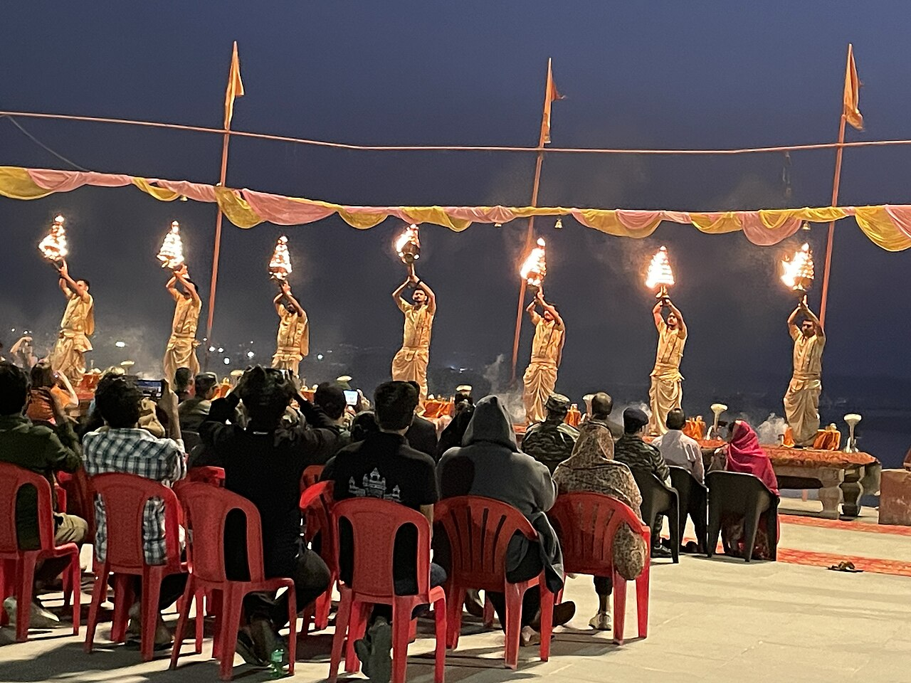

RIVER & GHATS01 /
The rhythm of the river.
Take in the ghats, the river, and the gentle rhythm of Kashi. Ask about a riverside walk or a boat ride.

The river. The rituals. The little lanes.
Come closer to the Kashi you came to discover.
One city. Countless ways to experience it.
మన కాశీ. మన ప్రయాణం.FIND YOUR KASHI
Sacred spaces, quiet river moments, and a city that comes alive after sunset. Start with what speaks to you.

RIVER & GHATSTake in the ghats, the river, and the gentle rhythm of Kashi. Ask about a riverside walk or a boat ride.

TEMPLES & TRADITIONSMake room for Kashi Vishwanath and the city's sacred lanes. Plan temple visits around current entry rules.

RITUALS & LOCAL LIFEDiscover riverside rituals, from morning aarti at Assi Ghat to the evening ceremony at Dashashwamedh Ghat.
A little inspiration for your visit. Routes, guide availability, boat rides and temple arrangements are confirmed directly.
KAASHI TELUGU GUIDE
A meaningful visit starts with a simple conversation. Tell us what brings you to Kashi, what you hope to see, and how you like to travel.
Share your dates
and interests
Discuss your route
with the guide
Confirm the details
before your visit
MAKE IT YOUR JOURNEY
Put your ideas together, then connect with Kaashi Telugu Guide to discuss availability and the details of your visit.
Take your time. A good journey
begins with the right questions.
YOUR NEXT STEP
Keep this message handy when you contact the guide. Call to discuss your visit, or open the Google listing for more details.
BEFORE YOU GO
Leave a little room for discovery.
Plan the essentials ahead.
Prepare an enquiry above, then open Kaashi Telugu Guide's Google listing to find the current contact options. Confirm dates, meeting point, route and fees directly with the guide.
Include your preferred language in your enquiry to Kaashi Telugu Guide. Confirm language availability and any requirements directly before making arrangements.
The experiences on this page are ideas for your visit. Ask the guide about any entry fees, official booking requirements, boat charges and inclusions. Boat availability depends on river and weather conditions.
Wear comfortable footwear, dress respectfully, and carry water. Follow local instructions and temple security rules. Ask before photographing people or rituals, and respect restrictions at cremation ghats.